应用市场
首页直接展示小米官方热门榜，支持搜索、下拉刷新、分页加载与本地缓存，不伪造下载量或排名。
XIAOMI / REDMI · MULTI-DEVICE
克制的系统改造。
该留下的，一个不少；该安静的，彻底安静。
同一套 LITE 官改流程，覆盖小米与红米多代机型。217 项系统精简、KSU / Magisk 双 Root 方案， 配合内置「高级设置」与 Lite-Store，按机型代号与底包分别构建。
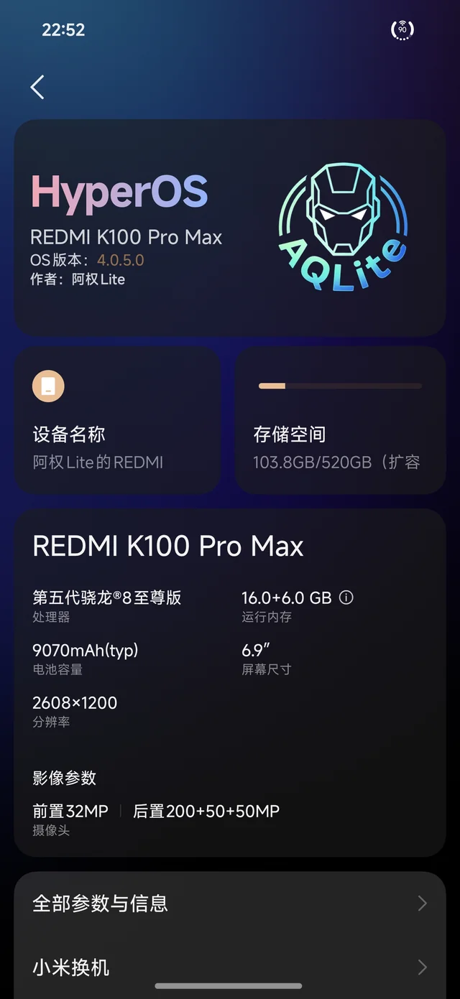
LITE 官改 · 实机界面
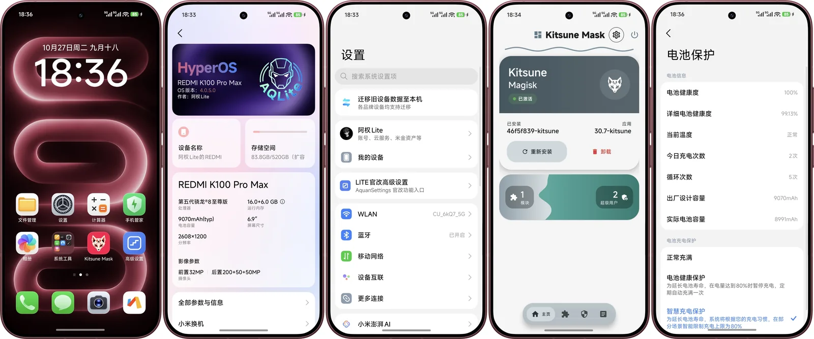
01 / 高级设置
「高级设置」随 ROM 内置，入口位于「设置 → 我的设备」，首页重建后也会自动补插。 调度中心、状态栏、显示与色彩、充电与系统开关集中在一个应用里；开机即生效，完全不需要 Magisk / Zygisk。
调度中心实时显示 CPU 核心频率、负载与整机功耗，可在性能、均衡、省电三档间切换； 温控阈值、调度器与刷新率档位支持逐项调整，重启后依然生效。
11 月更新新增「色彩风格」与「屏幕调色（高级模式）」，可直接进入系统隐藏的色彩风格页调节智能色温与色彩模式， 并在自然 / P3 / sRGB 色域间切换、按 RGB 空间微调；刷新率新增「动态最高刷新率」与「全局强锁刷新率」两套方案， 185Hz 等自定义档位也能正常生效。
性能 / 均衡 / 省电 · 实时功耗
三合一图标 · 24 项开关 · 电量环
全局高刷 · 极暗 · 字体无级缩放
色彩风格 · P3 / sRGB · RGB 调节
温控三档 · 旁路供电 · 定量停充
应用深度优化 · 广告体检 · 调试入口
INTERFACE / 界面实拍
9 张截图，来自 LITE 官改内置的「调度中心」与「高级设置」。
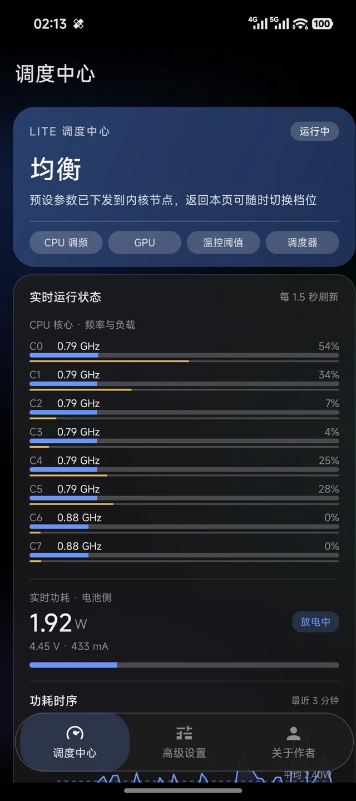
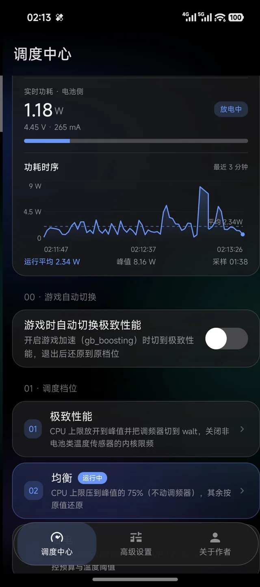
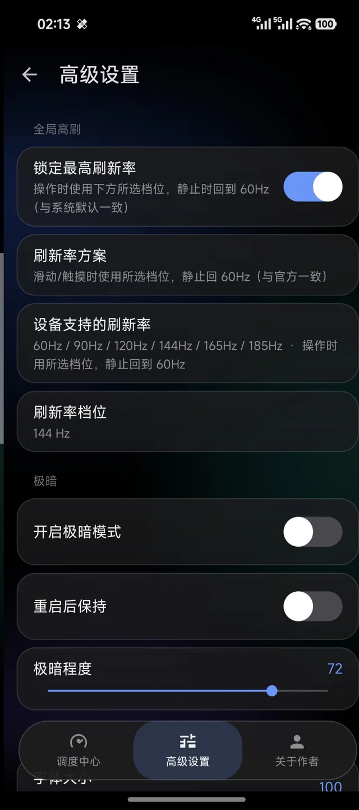
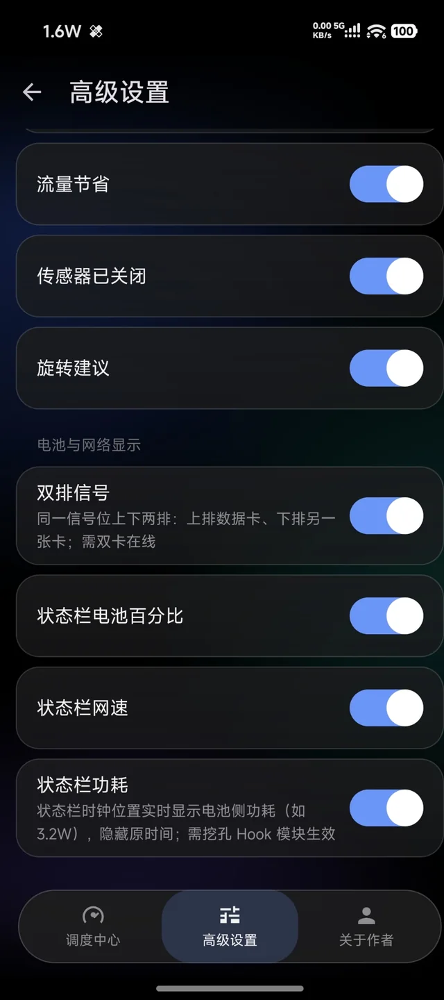
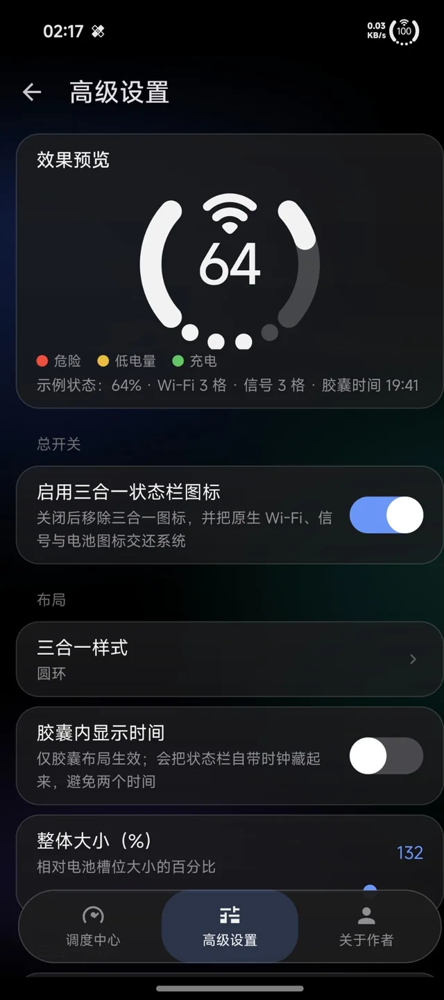
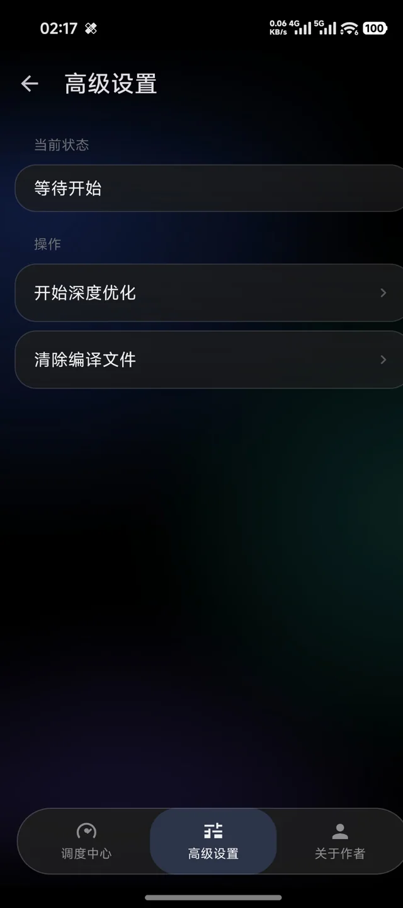
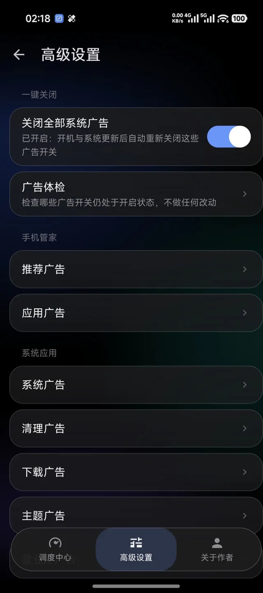
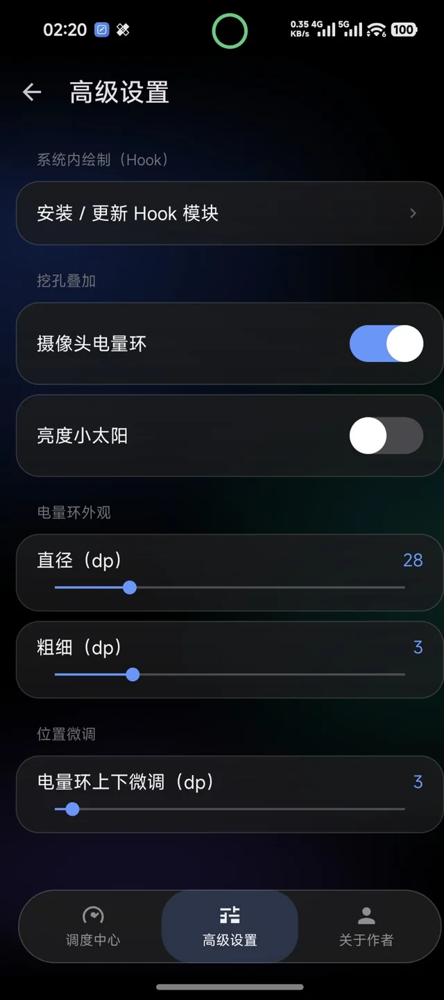
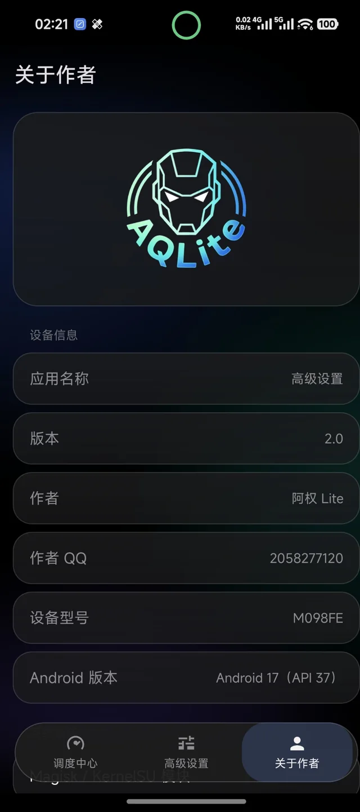
SUPPORT / 支持与联系
ROM 由阿权 Lite 个人维护，免费提供。若它帮到了你，可以扫码支持； 有问题或建议，也欢迎加 QQ 反馈。
二维码为作者本人收款码，支付前请核对收款方名称。
02 / Lite-Store
Lite-Store 是 ROM 内置的轻量应用商店：热门榜单、多源搜索、官方更新批量下载， 以及模块与框架下载。安装前统一校验包名、版本与签名。
首页直接展示小米官方热门榜，支持搜索、下拉刷新、分页加载与本地缓存，不伪造下载量或排名。
对可信的小米官方系统应用使用官方更新协议批量检查更新，安装前强制校验包名、版本与签名。
统一下载目录并支持自定义且持久化，后台下载支持暂停、续传、校验与任务持久化；安装走系统安装器或可选 Root 静默安装，签名不兼容时阻止安装。
模块中心收录 LSPosed 官方索引全量条目并直连开发者发布页，兼容传统 Xposed 与新版 libxposed 模块；框架下载中心提供 LSPosed 官方存档、Vector、LSPatch。
安装前展示包名、来源、签名、Native ABI 与权限变化，ABI 不匹配时阻止安装；提供 Liquid Glass 主题，可切换主题色、明暗模式、玻璃透明度与模糊程度。
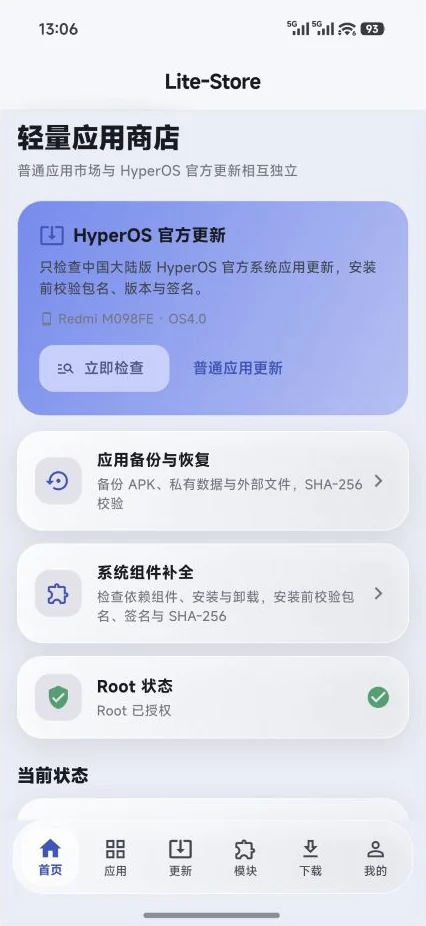
LITE-STORE / 界面实拍
7 张截图，覆盖应用、更新、模块、下载与备份。
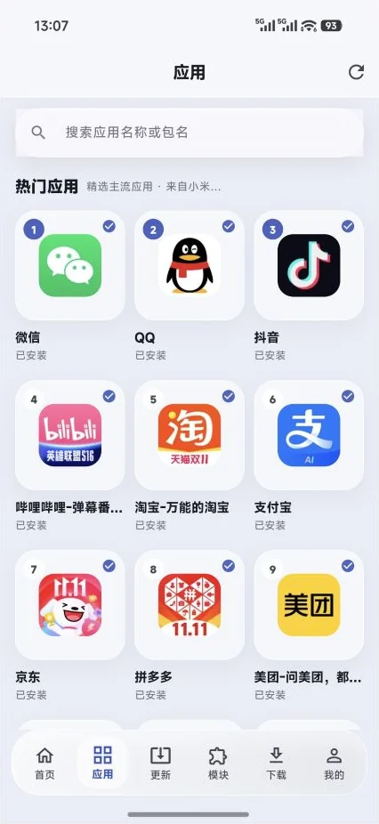
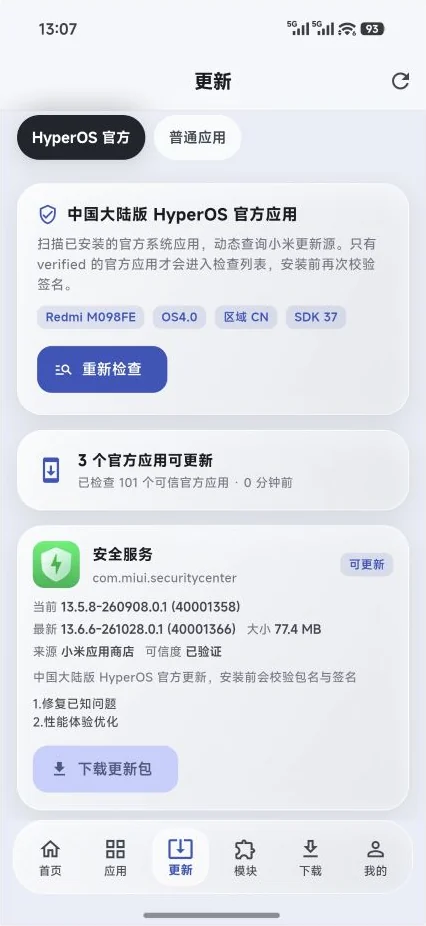
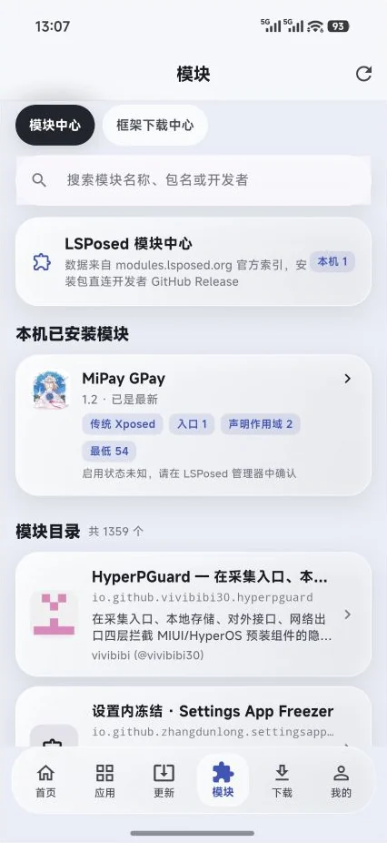
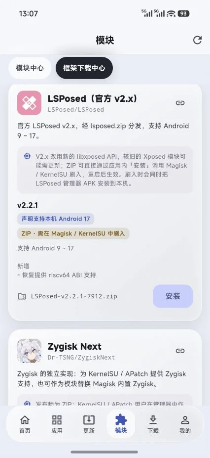
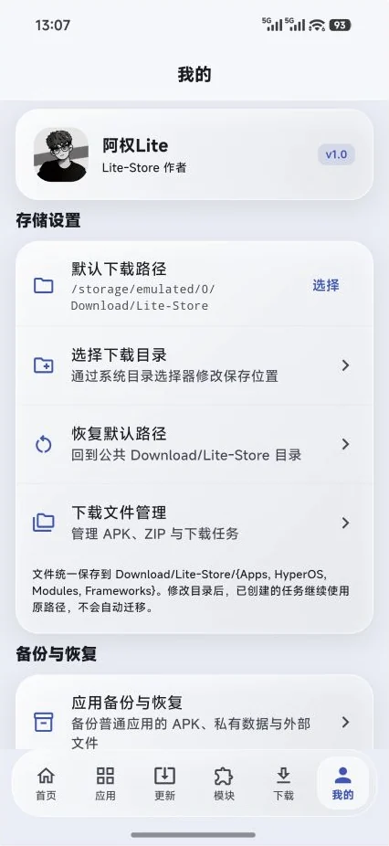
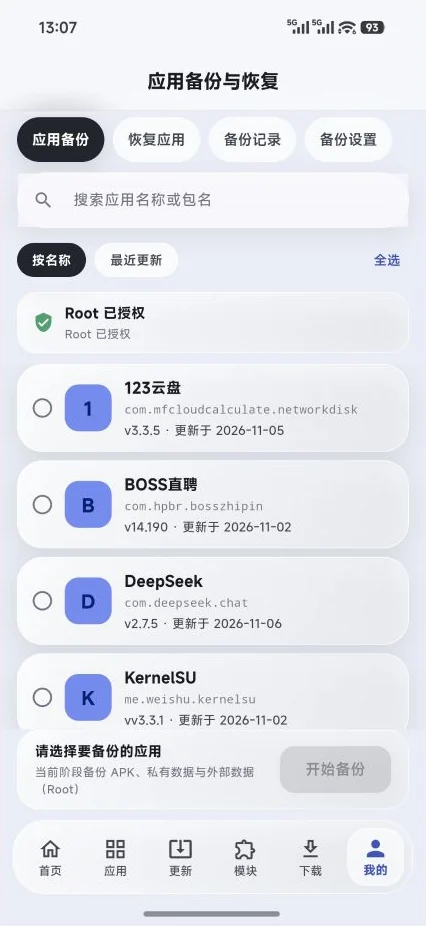
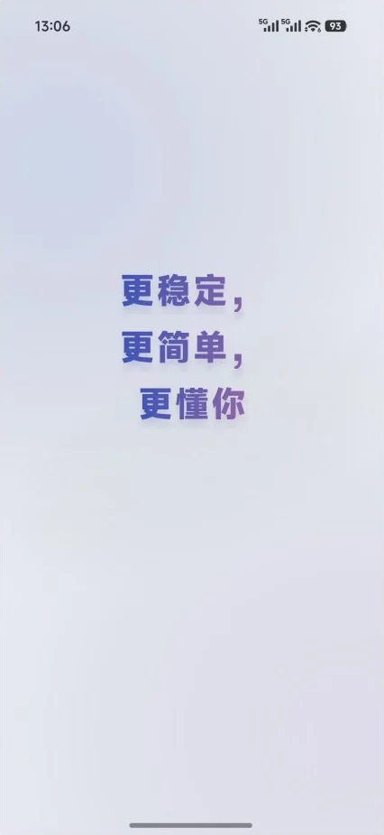
03 / 理念
LITE 官改不是功能堆叠，而是一次有取舍的重构。只保留能让系统更安静、更顺手的部分。
移除推广、统计、游戏中心与冗余服务，减少后台常驻与无谓唤醒。
不重绘系统，不替换核心交互，保留 HyperOS 原本的动效与秩序。
相机、音频、振动、互联与安全组件保持完整，只做必要的底层调校。
04 / 特性
从状态栏到温控节点，把系统能力收拢成几件真正会用的事。
共 217 项删除/替换，覆盖应用商店、游戏中心、小米支付、系统更新、语音助手与 Cust 预装应用，保留相机、相册、设置等核心组件。
关闭全部日志与后台上报，放宽缓存与后台进程上限，解除显示、帧率、画质与框架层的温控降频，让性能释放更接近硬件本身。
旁路供电、定量停充与公版 PPS，配合电池健康度查看，减少边充边玩带来的损耗。
圆环与胶囊两种样式，Wi-Fi、信号、电量合而为一，深浅色状态栏各有独立配色。
在挖孔位置绘制电量环与亮度小太阳，可调直径、线宽与位置，不占用悬浮窗。
全局高刷、极暗模式、字体无级缩放与开发者开关，集中在一个应用内完成。
把系统内分散的广告开关集中到一处管理，减少日常使用中的打扰。
签名校验与安装限制破解、AVB 移除、BL 锁伪装与 vbmeta 重签、主题防恢复，并内置 KSU / Magisk 双 Root 方案。
05 / 功能日志
整理自 ROM 内置的功能日志：系统层改动、Lite-Store 与高级工具箱， 以及刷入须知与更新记录。
精简共 217 项删除/替换，覆盖应用商店、游戏中心、小米支付、系统更新、语音助手、小米云服务推广位及 Cust 分区预装的电商/输入法/资讯类应用，保留相机、相册、设置等核心组件。提供深度精简与常规精简两个版本，常规精简额外保留应用商店与小爱全家桶。
关闭日志容量限制、离线日志、统计上报、诊断日志、内存转储、Wi-Fi 扫描日志、蓝牙日志与预编译详细日志，减少后台 IO 与空载唤醒。
移除系统分区完整性校验，自定义改动不再被拦截。
伪装为已锁 BL、绿色验证状态，并按机型重新生成校验镜像，规避系统完整性检测。
支持 KernelSU（KSU）与 Magisk 两种方案，按机型识别启动镜像并自动重打包，对应安装包预置到系统内，刷完即有 root 环境。
覆盖 Android 13/14 与 Android 16+ 的 V1/V2/V3 验签链路，并接管系统对 APK 签名、共享用户签名与 JAR 摘要的比对，改机、重签或替换系统应用不再被拒。
允许降级安装应用，允许 sharedUserId 不一致的应用安装与升级，关闭系统应用更新校验，修改版系统应用可直接覆盖安装。
所有重新打包的系统应用统一 4 字节对齐，降低长期使用后的内存碎片与加载开销。
放宽缓存进程与后台应用上限，关闭激进的内存回收与预启动/预加载/预缓存/息屏清理策略，微信、QQ 加入保活白名单。
关闭显示、帧率、画质与框架层的温控降频降亮度，空闲刷新率阈值下调，日常与游戏场景不再被强行压频。
开启 HiFi 高保真、环绕立体声、声场与游戏音效、音频震感、双声道录屏、通话变声，并破除原生外放音量上限。
JPG 编码质量拉满，开启硬件视频加速、HDR 超清显示、视频补帧/防抖/AI 增强与视频后处理。
开启相机实验室模式扩展自定义拍摄能力，同时优化视频通话美颜链路。
大幅降低触控输入延迟，提升滑动与点击跟手度。
开启智能充电与加速充电，配合高级工具箱的旁路供电、公版 PPS、定量停充使用。
降低长时间亮屏烧屏风险，应用异常退出后可自动恢复。
提升定位精度与首次定位响应速度。
开机修复主题目录权限，避免换主题后因权限问题被系统还原。
采用三张卡片、参数网格与统一配色的定制风格，并自动适配不同机型与版本，结构不匹配时保留系统原样，避免闪退。
在“使用时长”下方新增自上次充电以来的亮屏时长，小号灰字、夜间自动换色。
截断云控下发的温控/调度方案、替换去广告版广告服务、清理安全中心的采集与推荐、关闭设备注册与号码认证上报，并按 Android 版本替换改版安装器。
限制后台进程、Doze 参数、降低刷新率、Wi-Fi 休眠策略、电池智能服务与 AVF 虚拟机等会牺牲功能或流畅度的项不默认改动，交由用户按需选择。
为支持机型开启全屏 AOD 并注入 1Hz 刷新能力，指纹监视默认帧率清空；部分机型额外降低切换应用时的 CPU 下限与 GPU 唤醒开销。
内置应用市场，首页直接展示小米官方热门榜，支持搜索、下拉刷新、分页加载与本地缓存，不伪造下载量或排名。
对可信的小米官方系统应用使用官方更新协议批量检查更新，安装前强制校验包名、版本与签名。
统一下载目录并支持自定义且持久化，后台下载支持暂停、续传、校验与任务持久化；安装走系统安装器或可选 Root 静默安装，签名不兼容时阻止安装。
模块中心收录 LSPosed 官方索引全量条目并直连开发者发布页，兼容传统 Xposed 与新版 libxposed 模块；框架下载中心提供 LSPosed 官方存档、Vector、LSPatch，区分 Magisk 包与 APK 并标注 Android 支持范围。
安装前展示包名、来源、签名、Native ABI 与权限变化，ABI 不匹配时阻止安装；提供 Liquid Glass 主题，可切换主题色、明暗模式、玻璃透明度、模糊程度与低模糊性能模式。
系统设置首页「我的设备」正下方自动插入「LITE 官改高级设置」入口，图标与工具箱一致、点击直达，首页重建后自动补插，关闭设置再打开也不会消失。
注入通道随系统启动加载，完全不需要 Magisk / Zygisk，无模块冲突、无重复注入。
绕摄像头挖孔绘制绿色电量环（低电量转琥珀色），随亮度显示不同光芒数的小太阳，并可独立隐藏系统电池图标，直径、线宽、位置均可调。
性能 / 均衡 / 省电三档，CPU 上限按硬件峰值 100% / 75% / 60% 取值；支持逐节点自定义，重启后依然生效。
批量编译全部已安装应用提升启动速度，支持暂停 / 继续（不从头再来）与一键清除编译产物。
旁路供电、公版 PPS、定量停充（到设定电量自动停），并可查看电池健康度、循环次数与剩余容量。
24 项状态栏图标开关、通知图标个数、全局高刷（含锁屏最高刷新率）、极暗模式、字体大小无级缩放、锁屏通知 / 运营商 / 扫一扫显示控制。
控制中心 5G 开关、安全评分保持满分、关闭体验改进上报入口、广告开关集中管理、Wi-Fi 密码查看、开发者选项 / USB / 无线调试入口、一键重启系统界面、通知过滤 / 历史 / 闪光灯 / 气泡等。
下载并解压 ROM 压缩包，手机进入 fastboot 模式。
电脑打开压缩包内以 drive 开头的压缩包，安装驱动。
数据线连接手机，电脑打开 BAT 批处理文件。
按提示选择：Y 为保数据刷入，N 为格式化刷入。第一次刷机务必选择 N（格式化刷入）。
输入后会出现 123 选项：1 保持无 root，2 Magisk，3 KSU，按需选择。
刷完 ROM 第一件事是开机进入系统，把压缩包里的 Magisk.apk 或 ksu.apk 拉到手机重新安装，之后即可正常使用与高级设置（KSU 需要打开“显示系统应用”并为高级设置授权）。
默认开机的 Magisk 是 stub.apk，无法正常使用，这是 Magisk 的强制行为，无法修改。
KSU 如果要使用元模块，务必提前在 KSU 中打开“隐藏 SELinux 修改”，元模块挂载会修改 SELinux 上下文导致卡二。
06 / 机型
同一套 LITE 官改流程，覆盖 46 款小米与 Redmi 机型。 每台设备使用自己的官方底包、代号与线刷配置，不能跨型号混刷。
红米 K100 Pro Max songyuan
机型列表整理自 make.sh 的机型映射。官改 ROM 跟随官方更新，内置 Magisk 也随官方版本更新； 每款设备均基于对应机型的官方底包单独构建，不提供老机型移植版本。 请勿把其他型号的线刷包刷入本机。
07 / 底层
真正影响体验的改动，发生在系统框架层。它们不会出现在桌面上，却决定了系统能走多远。
以上改动会降低系统完整性保护。
仅建议在个人设备、且理解风险的前提下使用。
覆盖 Android 13/14 与 Android 16+ 的 V1/V2/V3 验签链路，接管 APK 签名、共享用户签名与 JAR 摘要比对，重签或替换系统应用不再被拒。
关闭 vbmeta 校验，同时保留完整的线刷回滚路径，方便随时恢复官方系统。
伪装为已锁 BL 与绿色验证状态，并按机型重新生成校验镜像，规避系统完整性检测。
开机修复主题目录权限，重启后不再被系统重置，自定义主题可以长期保留。
内置 KernelSU 与 Magisk 双方案，按机型识别启动镜像并自动修补 Boot，刷完即有 root 环境。
所有系统 APK 统一进行对齐检查，减少加载与内存开销，也避免运行时的隐性异常。
08 / 刷入
线刷包需在 Windows 下运行。首次刷入会清空数据，请先完成整机备份。
解锁 Bootloader，备份照片、聊天记录与重要数据。首次刷入会格式化 Data。
在 Windows 上解压线刷包，先运行压缩包内以 drive 开头的驱动包完成安装。
关机后按住音量下键与电源键，进入 Fastboot 后连接数据线。
双击 BAT 批处理文件，按提示选择 Y 保数据或 N 格式化；中途不要拔线。
随后出现 123 选项：1 保持无 root，2 Magisk，3 KSU，按需选择。
脚本会自动重启。进入系统后重新安装压缩包内的 Magisk.apk 或 ksu.apk。
10 / 问答
关于数据、Root 与兼容性的几个常见问题。
是。首次刷入、从官方到官改、官改互刷以及跨 Android 版本，都建议选择 N（格式化 Data）。同版本官改升级才可以选择 Y 保留数据。
内置 KernelSU 与 Magisk 双方案，刷入时按 123 选项选择即可。首次开机需重新安装压缩包内的 Magisk.apk 或 ksu.apk；默认开机的 Magisk 是 stub，无法直接使用。
ROM 内置的轻量应用商店：提供官方热门榜、多源搜索、HyperOS 官方更新批量下载，以及 LSPosed 模块与框架下载。所有安装前都会校验包名、版本与签名。
列表内的机型都有对应版本，但必须使用该机型的代号与官方底包构建的线刷包。LITE 官改不做老机型移植，列表外的机型没有可用版本；内置 Magisk 跟随官方更新，不同型号之间也不能互刷。
进入 Fastboot，重新线刷对应版本的官方完整包即可恢复。刷机前请务必确认官方包版本与机型完全匹配。
ROM 体积约 9.9 GB，直接托管成本较高，也容易出现第三方转载与版本混淆。通过作者获取可以确保文件完整、版本对应。